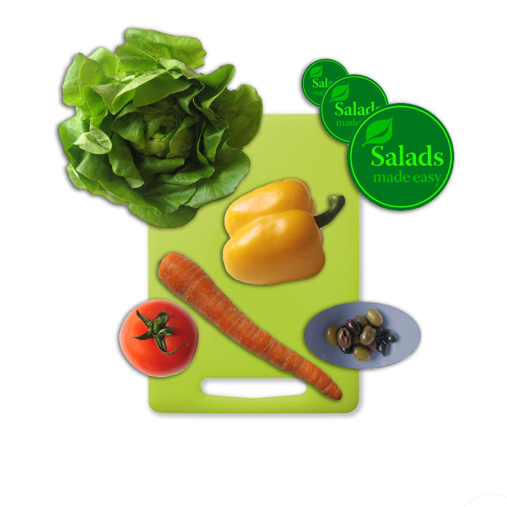

This tutorial involved moving images of various food items on a single white background into a single composite. This involved selecting each food item out of its white background, and a different selection tool was appropriate for each instance. For images with smooth well-defind edges, such as the tomato, salad sticker, and olive bowl, the quick selection tool or elliptical marquee tool were satisfactory. The lettuce had a lot of strange edges, so the magic wand tool was used to select all of the white space around it by pixel color. This selection was inverted in order to obtain the lettuce. The yellow pepper was selected using the magnetic lasso, which finds edges with high contrast semi-automatically. The carrot was selected using a combination of the lasso tool (freehand selection, for round edges) and polygonal lasso (for the straight edges). All food items were moved onto the cutting board and given a Drop Shadow effect from the Layer FX menu to provide the illusion of depth.
This postcard was made by compiling a variety of different images into a single photoshop document, but on different layers. The layers include a cloud layer, two pineapples, a photograph, a flower, a stamp, and two text layers ("HAWAII" and "ISLAND PARADISE?"). There are two pineapple layers right next to each other with the "Overlay" blending mode applied because this deepened the colors, shadows, and highlights, resulting in a more visually appealing image. The beach layer was resized using free transform and given a white, photograph-like border via a layer effect known as Stroke. A cloud filter was rendered on a blank layer to provide the illusion that the main pineapple was outside. This was sent close to the bottom of the layer stack so it would appear behind everything else. The text was each put on its own layer, and a gradient was applied to the "HAWAII" by selecting pixels within the text itself, and then applying the gradient tool to these, using white and a pink to match the pink of the flower. Drop Shadow layer effects were applied to all layers to provide the illusion of depth. The opacity of the stamp layer was reduced in order to make it look like an actual stamp that had been placed on the corner of the card. Another border was placed on the outside of the pineapple layer to make the entire image feel like a photograph. The entire project was then saved under a different name (to preserve this working version, in case I should want to change something later), and then flattened in order to make the file size smaller.